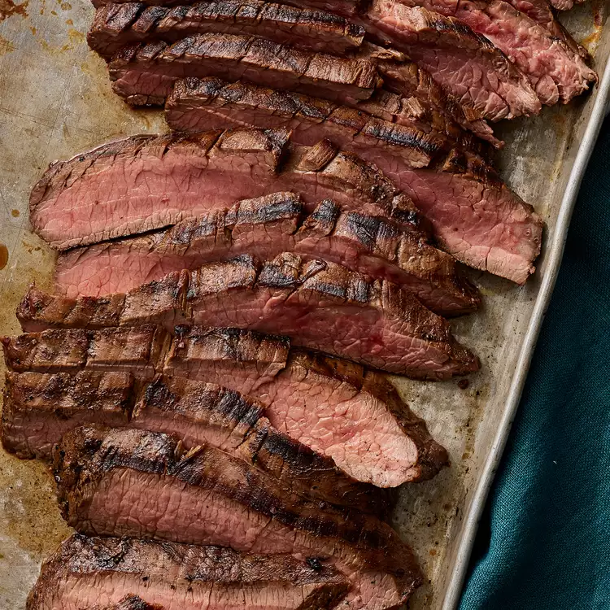

Steak

Description
Here you will learn the secret for making a marinated flank steak.
Ingredients
- 1 (1 1/2-pound) flank steak
- ½ cup vegetable oil
- ⅓ cup low-sodium soy sauce
- ¼ cup red wine vinegar
- 2 tablespoons fresh lemon juice
- 1 ½ tablespoons Worcestershire sauce
- 1 tablespoon Dijon mustard
- 2 cloves garlic, minced
- ½ teaspoon ground black pepper
Step by Step Guide
- Whisk together oil, soy sauce, vinegar, lemon juice, Worcestershire sauce, Dijon mustard, garlic, and pepper for marinade in a 9x13-inch glass baking dish until thoroughly combined.
- Add flank steak to the baking dish; turn several times to coat thoroughly with marinade. Cover, and refrigerate for 2 to 6 hours, or up to 12 hours if you have time.
- When ready to cook, preheat an outdoor grill for medium-high heat and lightly oil the grate
- Remove steak from the marinade and shake off excess. Discard the remaining marinade.
- Cook steak on the preheated grill for about 5 minutes per side, or to desired doneness.
- Remove from the grill and let rest for 5 minutes before slicing and serving.
Return to Mainpage